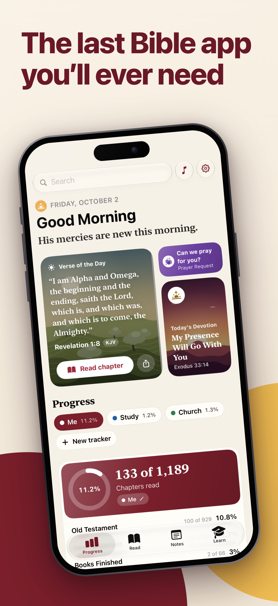
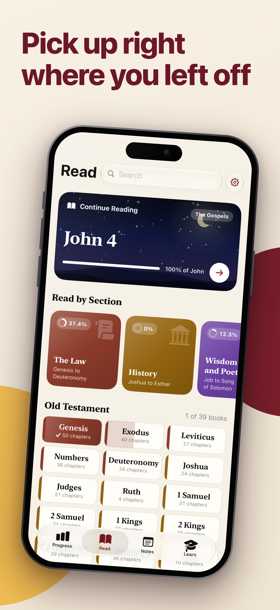
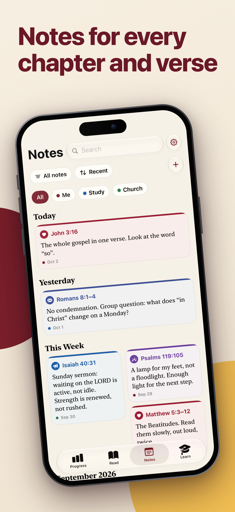
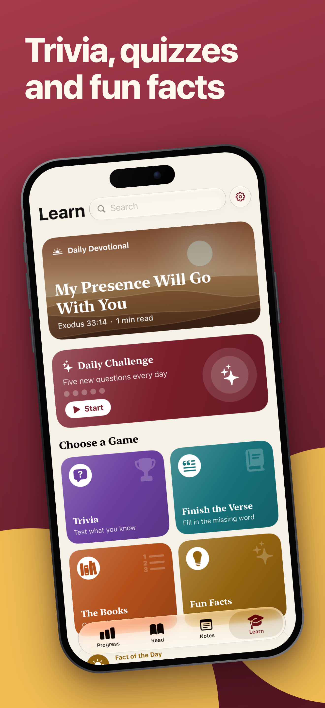
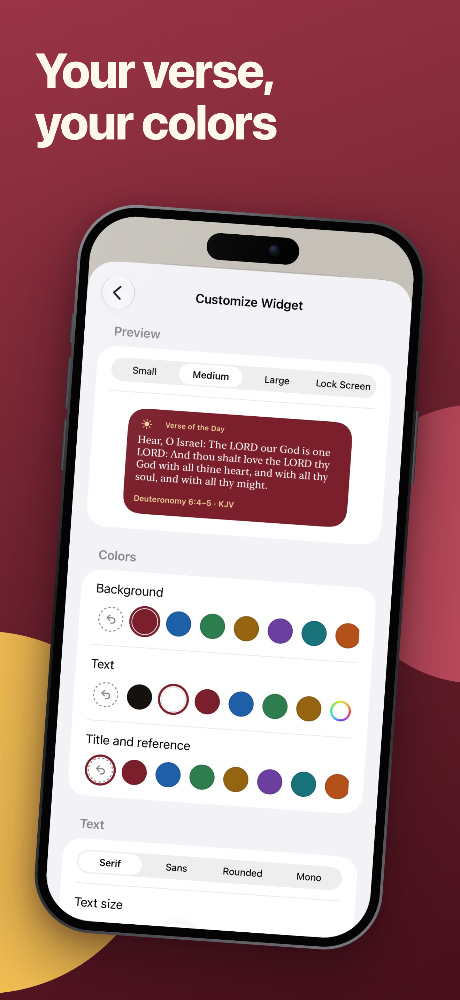
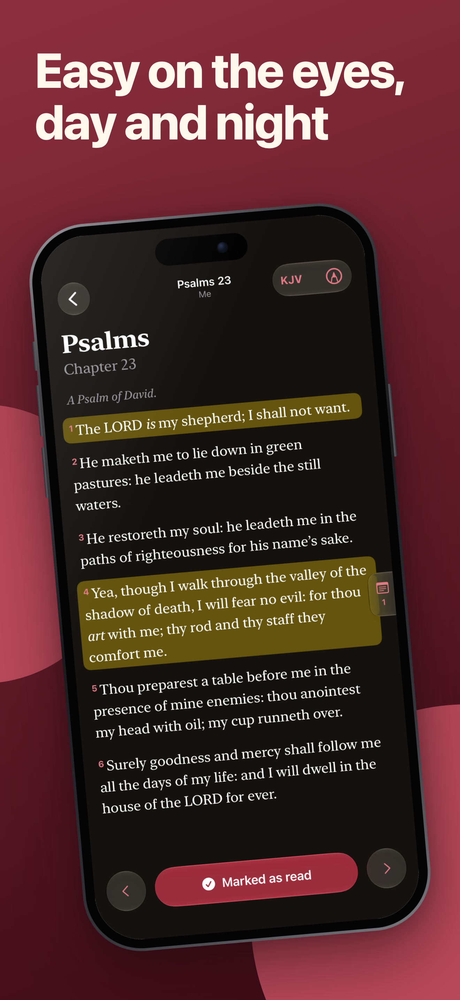
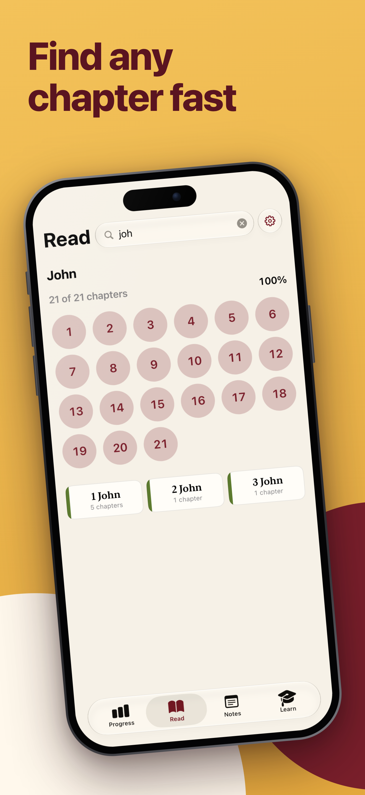
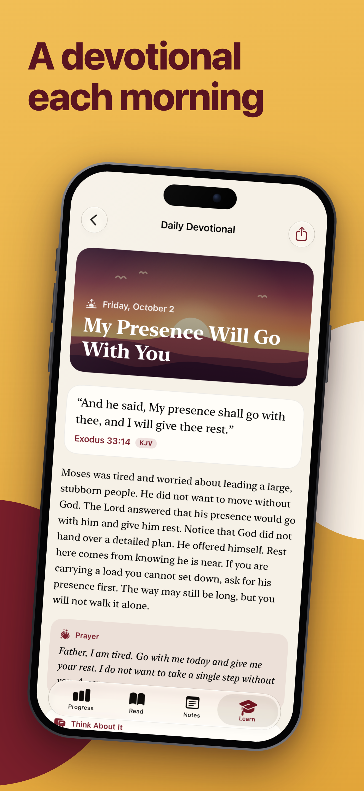
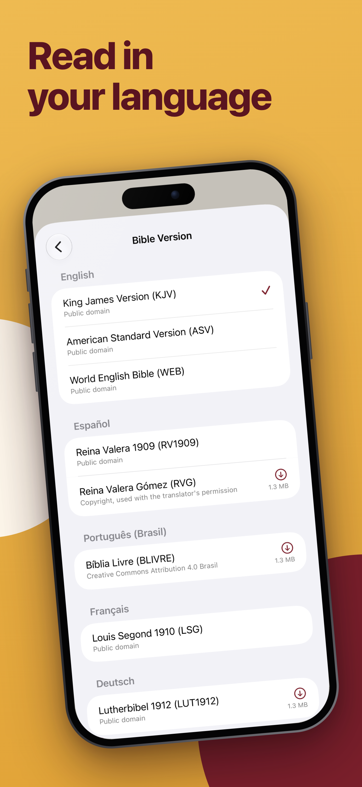

Progress
A morning greeting, Verse of the Day, today's devotional and a prayer card. Name your reading trackers, like Me, Study or Church, and follow chapters read out of 1,189, books finished, and Old and New Testament progress.
All Projects / Everything Bible
Read, reflect and learn, with a place for every note. Four tabs bring your reading, progress, notes and daily learning together.
Nine pictures from the redesigned 1.6 app.
Swipe or scroll sideways to explore. With a keyboard, focus the gallery and use the arrow keys.









A morning greeting, Verse of the Day, today's devotional and a prayer card. Name your reading trackers, like Me, Study or Church, and follow chapters read out of 1,189, books finished, and Old and New Testament progress.
Continue Reading where you left off, or Read by Section: Law, History, Wisdom and Poetry, and more. See every book with its progress. Highlight in the reader, choose light or dark, and mark a chapter as read.
Keep notes for any chapter or verse, with your own tags. Find them grouped by Today, Yesterday and This Week.
Daily Devotional, Daily Challenge, Trivia with 361 questions, Finish the Verse, The Books and 98 Fun Facts.
A glass search bar understands references like john 3
, 1 cor 13
and ps23
.
Give the home screen widget your own colors.
Choose from 15 app languages, with free Bible downloads in 13 more languages. KJV, ASV and WEB in English are built in.
No ads, no purchases and no tracking. Built with SwiftUI for iPhone, on iOS 26 and newer.